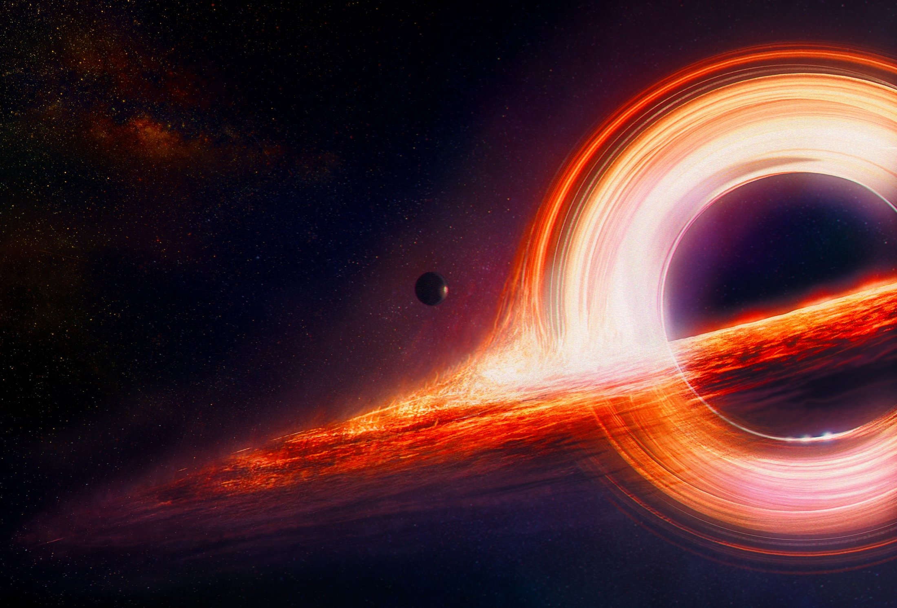

Black holes - cosmic giants
What are black holes?
Black holes are regions of spacetime that, due to their gravity, pull in everything (including light). According to general theory of relativity, their formation requires the accumulation of a sufficiently large mass within a sufficiently small volume. A black hole is surrounded by an event horizon, which marks the point of no return. The name "black hole" arose from the possibility of absorbing light and not reflecting it, similar to perfectly black objects in thermodynamics. The quantum field theory predicts that a black hole emits radiation like a perfect black body at a temperature below 0 degrees Celsius. The temperature is inversely proportional to the mass of the black hole, making it difficult to observe radiation from stellar-mass or larger black holes.
How do they form?
Black holes form when a star more than 20 times the size of the Sun dies, burning all elements lighter than iron. In the end, an iron core remains, where no more thermonuclear reactions occur. When the core exceeds 1.4 times the mass of the Sun, it collapses and gives birth to a neutron star. A black hole can form if the neutron star exceeds 3 solar masses and undergoes gravitational collapse.
Supermassive black holes form differently. One theory suggests that accretion plays a major role. It involves matter falling onto a stellar black hole. If enough matter accumulates, a supermassive object can form. According to other theories, such large black holes are formed by the merging of smaller objects or are as old as the galaxies they reside in, having formed at the same time. Most likely, a supermassive black hole resides at the center of every large galaxy.
Types of black holes
Three types of black holes are distinguished:
- Primordial black holes (theoretical existence)
- Stellar black holes
- Supermassive black holes
Primordial black holes are hypothetical objects that could have formed shortly after the Big Bang, from extremely dense matter. Their minimum mass may be significantly less than the mass of the Sun, and their maximum mass is probably up to 100,000 times the mass of the Sun. Satellites like GLAS are involved in the search for traces of these objects, but so far, they have not confirmed their existence.